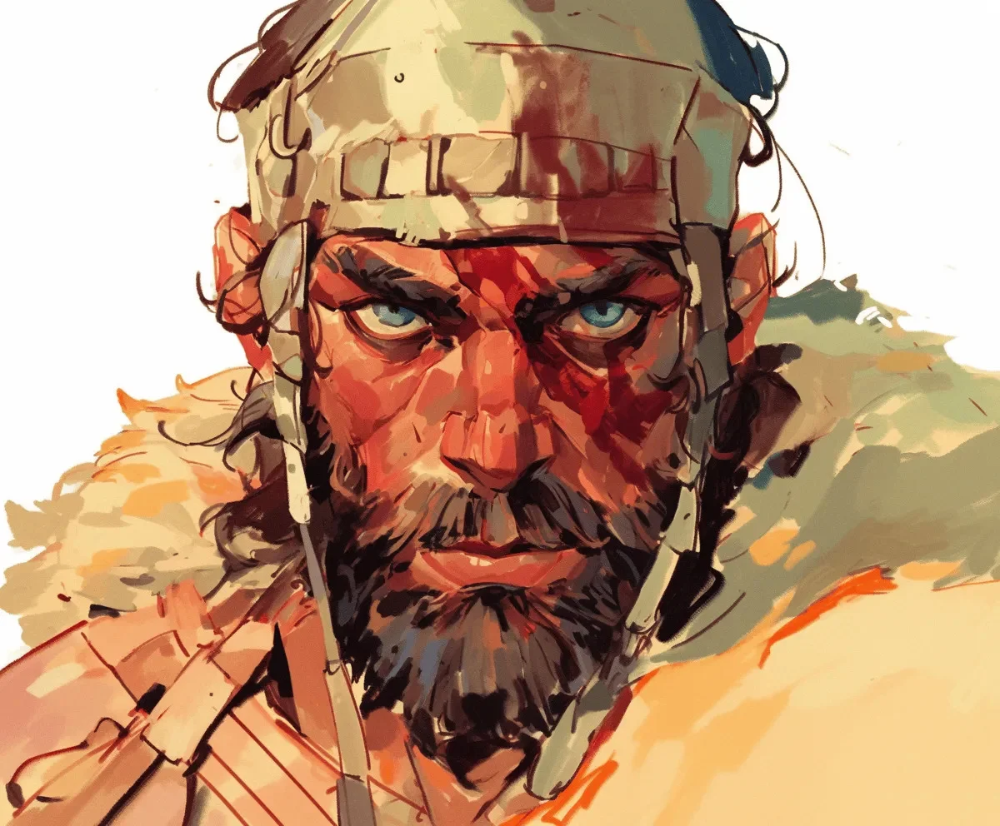

늙은 신들은 세 번 죽었던 자들에게 다르게 말을 건넨다.
[The old gods speak differently to those who’ve died three times.]
그들의 속삭임은 내 혀 위에서 쇠와 재처럼 느껴지고, 볼바가 나를 되살리는데 사용한 약초만큼이나 쓰다. 그녀가 죽음의 강변에서 나를 불러내며 주문을 외울 때 그녀의 뼈로 짜여진 머리땋은 주사위처럼 딸각거렸다. 전투의 흔적으로 가득하고 겨울 늑대처럼 회색빛을 띈 내 수염도 신들이 안절부절못할 때면 내 피부 아래서 맥동치는 룬 문자들을 감출 수는 없다.
[Their whispers taste like iron and ash on my tongue, bitter as the herbs the völva used to bring me back, her bone-woven braids clicking like dice as she chanted me from death’s shores. My beard, thick with battle-marks and grey as winter wolves, can’t hide the runes that pulse beneath my skin when the gods grow restless.]
아홉 개의 길이 만나는 레이븐크로스에 서서, 신들이 약속했던 징조를 기다린다. 까마귀 셋이 맴도는 건 전쟁을 의미한다. 일곱은 죽음을 뜻한다. 오늘, 나는 열셋을 세었다. 옛 마법이 얼어붙은 벌꿀술처럼 내 혈관을 타고 흐르며, 동시에 태우고 보존한다.
[I stand at Ravencross where nine roads meet, waiting for the sign the gods promised would come. Three ravens circling means war. Seven means death. Today, I counted thirteen. The old magic runs through my veins like frozen mead, burning and preserving all at once.]
첫 번째 죽음은 칼에 의해 왔다—반역자의 손에 들린 왕의 검이었다. 두 번째는 바다에서 왔다—아직도 내 꿈에서 나를 괴롭히는 바다뱀의 배 속에서. 그리고 세 번째—세 번째 죽음은 까마귀들 자신이 준 선물이었다, 그들의 부리로 내 영혼을 오딘의 전당에서 데려왔다.
[The first death came by sword—a king’s blade in a traitor’s hand. The second by sea—in the belly of a serpent that still haunts my dreams. And the third—the third death was a gift from the ravens themselves, their beaks carrying my soul back from Odin’s halls.]
내 쇠사슬 갑옷이 무겁게 짓누른다. 그것은 쓰러진 왕들의 검으로 만든 고리들로 이루어져 있다. 내 허리춤의 검은 죽은 자들의 이름을 속삭인다—내가 두 번째로 부활한 뒤로 생긴 습관이다. 걸어다니는 죽은 자들이 아직도 자신들의 야를의 부름에 응답하는 이 땅에서, 나는 완전히 다른 존재다.
[My mail shirt weighs heavy, its rings forged from the blades of fallen kings. The sword at my hip whispers names of the dead—a habit it picked up after my second resurrection. In these lands, where the walking dead still answer their jarls’ calls, I am something else entirely.]
“그림울프!” 그 목소리가 사거리를 가로질러 울려 퍼졌다. 젊지만 힘이 실린 목소리였다. 새로 등장한 자들 중 하나다. 한 여름의 약탈로 왕관을 쓸 자격이 있다고 자처하는 이 자칭 야를들 중 하나지.
[“Grimulf!” The voice carries across the crossroads, young but weighted with power. One of the new ones, these self-proclaimed jarls who think a summer of raids makes them worthy of the crown.]
나는 빙하처럼 천천히, 운명처럼 필연적으로 돌아선다. 그 소년 족장이 삼십 명의 전사들과 함께 서 있다. 그들의 방패에는 늑대와 용들이 그려져 있다. 그들은 반원을 그리며 넓게 서있고, 무기들이 가죽 칼집에서 빠져나오며 쇳소리를 낸다. 그들은 내가 무엇인지 모른다—신들이 나를 어떤 존재로 다시 만들었는지.
[I turn, slow as glaciers, inevitable as fate. The boy-chief stands with thirty warriors, their shields painted with wolves and wyrms. They spread out in a half-circle, steel rasping against leather as weapons cleared sheaths. They don’t know what I am—what the gods rebuilt me to be.]
“네 머리에 걸린 현상금이면 내 전당을 십 년 동안이나 먹여 살릴 수 있을 거다,” 그가 외친다. 수적 우세와 젊음에서 빌려온 용기로.
[“The bounty on your head would feed my hall for ten winters,” he calls out, courage borrowed from numbers and youth.]
나는 나를 처음 죽음으로 이끈 흉터를 만진다—달빛 아래서도 여전히 빛나는 목을 가로지르는 은빛 선. “네 할아버지도 그 현상금을 차지하려 했었지,” 내가 그에게 말한다. “그는 이제 까마귀들의 먹이가 되었다.”
[I touch the scar that killed me first—a silver line across my throat that still gleams in moonlight. “Your grandfather tried to claim that same bounty,” I tell him. “He feeds the ravens now.”]
“내 할아버지는 혼자였지. 난 삼십 명을 데려왔다.”
[“My grandfather was one man. I bring thirty.”]
전투로 거칠어진 내 얼굴에 미소가 번진다. “그럼 공평한 싸움이 되겠군.”
[A smile cracks my battle-worn face. “Then it will be a fair fight.”]
내 피부 아래의 룬 문자들이 빛나기 시작한다—힘을 상징하는 우루즈, 승리를 상징하는 티바즈, 보호를 상징하는 알기즈. 늙은 신들은 잔인한 주인일지 모르나, 그들의 도구는 잘 무장시킨다.
[The runes beneath my skin begin to glow—Uruz for strength, Tiwaz for victory, Algiz for protection. The old gods might be cruel masters, but they arm their tools well.]
첫 번째 전사가 도끼를 높이 들고 돌진해온다. 시간이 겨울의 꿀처럼 천천히 흐른다. 나는 운명의 실—뷔르드—이 거미줄처럼 각각의 남자들 주위에서 반짝이는 것을 본다. 내 검이 수세기의 정확함으로 움직이며, 그 실들을 하나씩 끊어낸다.
[The first warrior charges, axe held high. Time slows, thick as honey in winter. I see the threads of fate—wyrd—shimmering around each man like spider’s silk. My blade moves with the precision of centuries, splitting those threads one by one.]
피가 사거리를 물들인다. 내 검이 고대의 노래를 부르고, 각각의 일격이 그들의 최후를 알리는 서사시의 한 구절이 된다. 그들은 너무 늦게서야 신들이 왜 나를 세 번이나 되살렸는지를 깨닫는다.
[Blood paints the crossroads. My blade sings the ancient songs, each strike a verse in the saga of their ending. They learn, too late, why the gods chose to bring me back three times.]
소년 족장이 마지막으로 쓰러진다. 그의 어린 눈에는 그를 구하기엔 너무 늦은 깨달음이 서려있다. 죽어가며, 그는 내 진실을 본다—까마귀의 표식들, 죽음의 룬 문자들, 내 눈빛 속 시대의 무게를.
[The boy-chief falls last, his young eyes wide with the revelation that comes too late to save him. As he dies, he sees the truth of me—the raven-marks, the death-runes, the weight of ages in my gaze.]
“당신은 어떤 종류의 드라우그입니까?” 그가 입술 사이로 피를 흘리며 속삭인다.
[“What manner of draugr are you?” he whispers, blood bubbling between his lips.]
“드라우그가 아니다,” 내가 그가 받을 자격보다 더 부드럽게 말한다. “인간들이 맹세를 저버리는 것에 지친 신들이 만들어낸 존재지.”
[“Not draugr,” I tell him, gentler than he deserves. “Something the gods made when they grew tired of men breaking their oaths.”]
나는 그의 망토로 검을 닦는다—붉은 양모가 더욱 붉어진다. 까마귀들이 내려앉고, 그들의 잔치를 갈망한다. 이 새들은 나를 알아본다. 그들은 전에도 내 살점을 맛보았었지.
[I clean my blade on his cloak—red wool becomes redder. The ravens descend, eager for their feast. They recognize me, these birds. They’ve tasted my flesh before.]
각각의 죽음은 나에게 진실을 가르쳤다: 첫 번째는—충성심은 얻어야 한다는 것, 두 번째는—운명은 속일 수 있다는 것, 그리고 세 번째는—신들의 경고는 피로 쓰여진다는 것. 언제나 피로.
[Each death taught me a truth: the first—that loyalty must be earned; the second—that fate can be cheated; and the third—that the gods’ warnings are written in blood. Always in blood.]